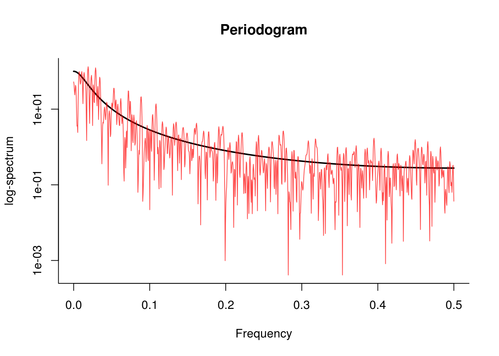

1.5 Spectral analysis
We can compute the periodogram manually using the function fft. We pad the series with zero to increase the number of frequencies at which it is calculated (this does not impact the spectrum, because the new observations are zero). To fully take advantage of the fast Fourier transform (which will be formally defined later in the semester), we make sure the length of the padded series is divisible by low primes.
N <- 500 # number of data points
M <- 2048 # zeropadded length of series
freq <- seq(0, 0.5, by = 1/M)
alpha <- 0.9
x <- arima.sim(n = N, model = list(ar = alpha))
# theoretical spectrum
spec.thry <- TSA::ARMAspec(model = list(ar = alpha), freq = freq, plot = FALSE)
h.pgram <- rep(1/sqrt(N), N) #periodogram taper / window
# prepared data
xh.pgram <- x * h.pgram
# calculate the periodogram manually with padding
spec.pgram <- abs(fft(c(xh.pgram, rep(0, M - N)))[1:(M/2 + 1)])^2
# Plot the series
plot(spec.thry$freq, spec.thry$spec, type = "l", log = "y", ylab = "log-spectrum",
xlab = "Frequency", main = "Periodogram", lwd = 2, bty = "l", ylim = range(spec.pgram))
lines(freq, spec.pgram, col = rgb(1, 0, 0, 0.7))
The workhorse function for spectral analysis is spectrum, which computes and plots the periodogram on log scale with some default options. Note that spectrum by default subtract the mean from the series before estimating the spectral density and tapers the series (more later). To plot the cumulative periodogram, use cpgram. The latter shows the band for the Kolmogorov-Smirnov statistic. Note the presence of the 95 % confidence interval. The width of the center mark on it indicates the bandwidth.